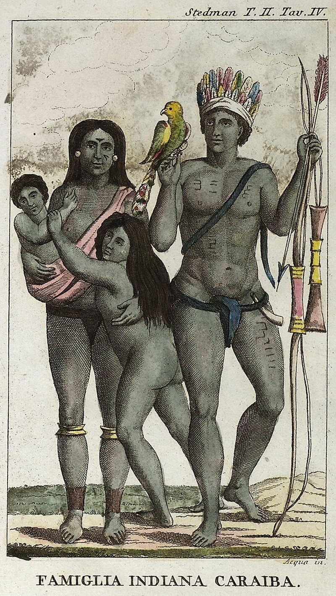

Les Kalinagos1, Caraïbes, Karibs ou Caribes, sont des populations amérindiennes originaires du nord du Venezuela ayant migré vers les îles des Caraïbes vers la fin du ixe siècle de notre ère2. Le nom international de « Caraïbes » leur a été définitivement attribué après l'arrivée des Européens dans le Nouveau Monde. De ce fait, ce peuple préfère l’appellation Kalinago plus proche de leur nom originel tel qu'il a été enregistré par le prêtre missionnaire français Raymond Breton (1609-1679) au début du xviie siècle, les hommes s'appelaient eux-mêmes Callinago et les femmes Calliponam.
Les Caraïbes ont nommé l'actuelle Dominique Wai`tukubuli qui signifie « Grand est son corps » et « Hairoun », non traduit, l'île de Saint-Vincent. Ils donneront leur nom à la mer de l'Amérique centrale, devenue la mer des Caraïbes.
À la suite du premier contact avec les Amérindiens, Christophe Colomb note dans son journal qu'on lui a rapporté l'existence : « Des hommes avec un seul œil, d'autres ayant des museaux de chien, se nourrissant de chair humaine : sitôt qu'ils capturaient un ennemi, ils le décapitaient, buvaient son sang et ils lui coupaient la nature ». Il semble que ce soit le résultat de l'imagination des Européens :
« « Cannibale » a pour origine un terme arawak, caniba, déformation de cariba, mot par lequel les Indiens Carib des Petites Antilles s'auto-désignaient. Dans leur bouche et dans leur langue, le mot signifiait, semble-t-il, "hardi", "homme courageux". En revanche, pour les Arawaks de Cuba, (Grandes Antilles), victimes des incursions répétées et sanglantes de leurs ennemis Carib, qui ne cessaient de remonter d'île en île, toujours plus au nord, le terme de cariba comportait une connotation extrêmement négative. C'est cette dernière qui prévalut, dans le discours prétendument factuel de Colomb, infléchissant d'emblée l'image du Carib, insensiblement transformé en redoutable et pittoresque cannibale. (Natalie Noyaret) ».
La désignation des Caraïbes dans la langue arawak, cariba, a par ailleurs été transposée, via l'espagnol, dans de nombreuses langues européennes, par exemple le français, donnant l'adjectif et substantif « cannibale ».